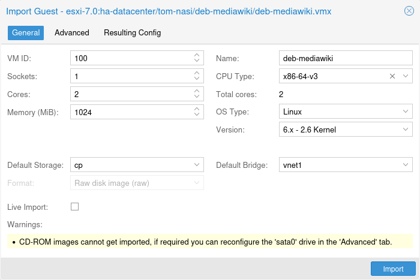

Importing existing virtual machines from foreign hypervisors or other Proxmox VE clusters can be achieved through various methods, the most common ones are:
- Using the native import wizard, which utilizes the import content type, such as provided by the ESXi special storage.
- Performing a backup on the source and then restoring on the target. This method works best when migrating from another Proxmox VE instance.
-
using the OVF-specific import command of the
qmcommand-line tool.
If you import VMs to Proxmox VE from other hypervisors, it’s recommended to familiarize yourself with the concepts of Proxmox VE.

Proxmox VE provides an integrated VM importer using the storage plugin system for native integration into the API and web-based user interface. You can use this to import the VM as a whole, with most of its config mapped to Proxmox VE’s config model and reduced downtime.
Note
The import wizard was added during the Proxmox VE 8.2 development cycle and is in tech preview state. While it’s already promising and working stable, it’s still under active development.
To use the import wizard you have to first set up a new storage for an import source, you can do so on the web-interface under Datacenter → Storage → Add.
Then you can select the new storage in the resource tree and use the Virtual Guests content tab to see all available guests that can be imported.

Select one and use the Import button (or double-click) to open the import wizard. You can modify a subset of the available options here and then start the import. Please note that you can do more advanced modifications after the import finished.
Tip
The ESXi import wizard has been tested with ESXi versions 6.5 through 8.0. Note that guests using vSAN storage cannot be directly imported directly; their disks must first be moved to another storage. While it is possible to use a vCenter as the import source, performance is dramatically degraded (5 to 10 times slower).
For a step-by-step guide and tips for how to adapt the virtual guest to the new hyper-visor see our migrate to Proxmox VE wiki article.
To import OVA/OVF files, you first need a File-based storage with the import content type. On this storage, there will be an import folder where you can put OVA files or OVF files with the corresponding images in a flat structure. Alternatively you can use the web UI to upload or download OVA files directly. You can then use the web UI to select those and use the import wizard to import the guests.
For OVA files, there is additional space needed to temporarily extract the image. This needs a file-based storage that has the images content type configured. By default the source storage is selected for this, but you can specify a Import Working Storage on which the images will be extracted before importing to the actual target storage.
Note
Since OVA/OVF file structure and content are not always well maintained or defined, it might be necessary to adapt some guest settings manually. For example the SCSI controller type is almost never defined in OVA/OVF files, but the default is unbootable with OVMF (UEFI), so you should select Virtio SCSI or VMware PVSCSI for these cases.
A VM export from a foreign hypervisor takes usually the form of one or more disk images, with a configuration file describing the settings of the VM (RAM, number of cores). The disk images can be in the vmdk format, if the disks come from VMware or VirtualBox, or qcow2 if the disks come from a KVM hypervisor. The most popular configuration format for VM exports is the OVF standard, but in practice interoperation is limited because many settings are not implemented in the standard itself, and hypervisors export the supplementary information in non-standard extensions.
Besides the problem of format, importing disk images from other hypervisors may fail if the emulated hardware changes too much from one hypervisor to another. Windows VMs are particularly concerned by this, as the OS is very picky about any changes of hardware. This problem may be solved by installing the MergeIDE.zip utility available from the Internet before exporting and choosing a hard disk type of IDE before booting the imported Windows VM.
Finally there is the question of paravirtualized drivers, which improve the speed of the emulated system and are specific to the hypervisor. GNU/Linux and other free Unix OSes have all the necessary drivers installed by default and you can switch to the paravirtualized drivers right after importing the VM. For Windows VMs, you need to install the Windows paravirtualized drivers by yourself.
GNU/Linux and other free Unix can usually be imported without hassle. Note that we cannot guarantee a successful import/export of Windows VMs in all cases due to the problems above.
Microsoft provides Virtual Machines downloads to get started with Windows development.We are going to use one of these to demonstrate the OVF import feature.
After getting informed about the user agreement, choose the Windows 10 Enterprise (Evaluation - Build) for the VMware platform, and download the zip.
Using the unzip utility or any archiver of your choice, unpack the zip,
and copy via ssh/scp the ovf and vmdk files to your Proxmox VE host.
This will create a new virtual machine, using cores, memory and
VM name as read from the OVF manifest, and import the disks to the local-lvm
storage. You have to configure the network manually.
# qm importovf 999 WinDev1709Eval.ovf local-lvm
The VM is ready to be started.
You can also add an existing disk image to a VM, either coming from a foreign hypervisor, or one that you created yourself.
Suppose you created a Debian/Ubuntu disk image with the vmdebootstrap tool:
vmdebootstrap --verbose \ --size 10GiB --serial-console \ --grub --no-extlinux \ --package openssh-server \ --package avahi-daemon \ --package qemu-guest-agent \ --hostname vm600 --enable-dhcp \ --customize=./copy_pub_ssh.sh \ --sparse --image vm600.raw
You can now create a new target VM, importing the image to the storage pvedir
and attaching it to the VM’s SCSI controller:
# qm create 600 --net0 virtio,bridge=vmbr0 --name vm600 --serial0 socket \ --boot order=scsi0 --scsihw virtio-scsi-pci --ostype l26 \ --scsi0 pvedir:0,import-from=/path/to/dir/vm600.raw
The VM is ready to be started.